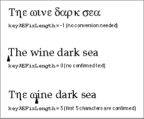

Creating and Updating an Active Input Area
The text service component uses the Update Active Input Area Apple event to request that your client application create and update an active input area, and accept confirmed text. For details on active input areas, see "Inline Input" on page 7-11.
Update Active Input Area--Creating and Updating an Active Input Area (Continued) Event class kTextServiceClass Event ID kUpdateActiveInputArea Requested action Update a range of text. Specify any necessary highlighting with offsets in the optional keyAEHiliteRangeparameter.Required parameters Keyword: keyAETSMDocumentRefcon Descriptor type: typeLongInteger Data: A TSM document specifier (reference constant) supplied by the application in a prior call to the NewTSMDocumentfunction (see page 7-50). This value is associated with the TSM document whose active input area is to be updated.Keyword: keyAEServerInstance Descriptor type: typeComponentInstance Data: A component instance value created by a prior call to the Component Manager OpenComponentfunction. This value identifies the text service component.Keyword: keyAETheData Descriptor type: typeChar Data: Text data that has been processed in some way by a text service component. Keyword: keyAEScriptTag Descriptor type: typeIntlWritingCode Data: The script code and language code associated with the text returned in the keyAETheDataparameter. The information is passed in a script-language record, as defined on page 7-42.Required parameters Keyword: keyAEFixLength Descriptor type: typeLongInteger Data: The length of the confirmed text in the active inline area. If the value of
keyAEFixLengthis -1, the text contained in thekeyAETheDataparameter is to completely replace the current selection in the application window. In this case, there is to be no active input area, the text is all considered to be confirmed, and is to be made part of the body text of the client application.If the value is 0, an active input area is in process, but there is no completely confirmed text being sent.
If the value is greater than 0, the text specified in the
keyAETheDataparameter up to the indicated offset is confirmed data and should be consumed by the application. The Text Services Manager considers any text beyond the offset specified by thekeyAEFixLengthparameter to be inside the active input area with the starting point of the active input area at that offset. This is illustrated in Figure 7-11.Figure 7-11 Updating text in an active input area

The text range array data structure used in thekeyAEHiliteRange
andkeyAEUpadateRangeparameters described above is defined by theTextRangeArraydata type:TYPE TextRangeArray = RECORD fNumOfRanges: Integer; fRange: ARRAY[0..0] of TextRange; END;ThefNumOfRangesfield contains an integer that indicates how many text ranges this array holds. ThefRangefield contains a series of text-range records. (If the array consists of more than one text-range record, the size of the array must be calculated asfNumOfRanges * SizeOf(fRange).)For sample code that handles the Update Active Input Area Apple event, see Listing 7-7 on page 7-26.